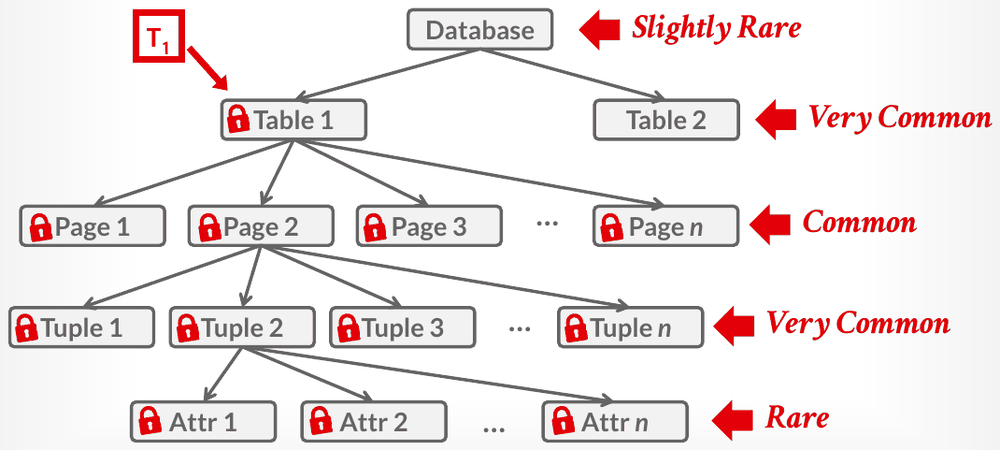
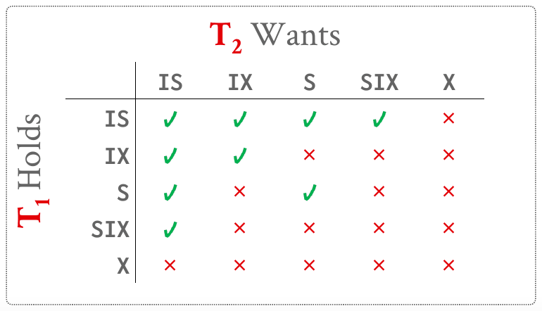
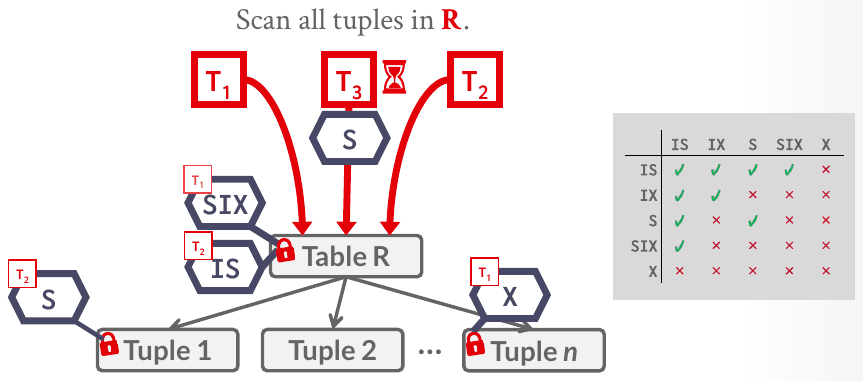
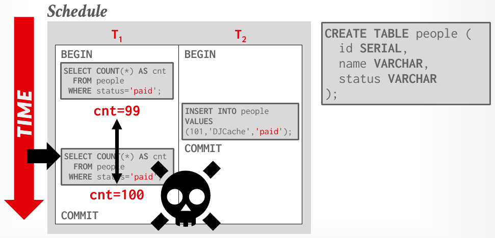
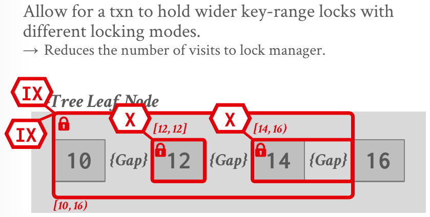
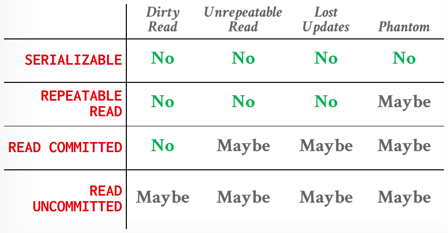
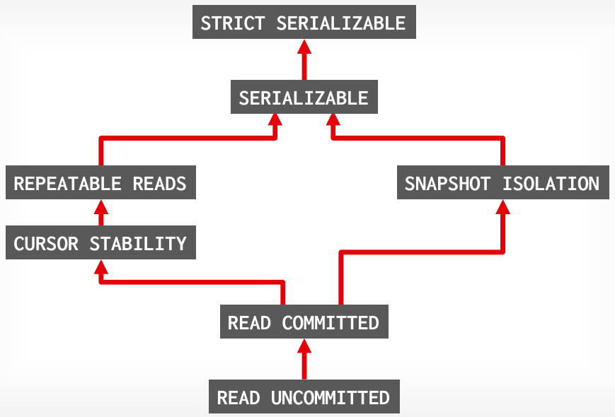

Database Internals in Go · Unit 7 · Lesson 4
Lock Granularity, Phantoms, and Isolation Levels
Choose the intention and explicit locks a query needs on a lock hierarchy, explain why locking records cannot stop phantoms and how index locks do, and read each SQL isolation level as a rule about which anomalies a transaction may see.
Lesson 2's two-phase locking put one lock on each object a transaction touches. That is correct, but a transaction that updates a billion tuples would need a billion locks, and Lecture #18 points out that acquiring a lock costs more than acquiring a latch even when the lock is free. This lesson starts with the fix, a hierarchy of locks at different granularities. Then it adds inserts and deletes, which break a hidden assumption behind every protocol so far, 2PL and OCC alike: that the set of objects in the database is fixed. It ends with isolation levels, the knob that lets an application give up some of that correctness for more concurrency.
Unit 7, Lesson 2: T2 holds an X lock on A. T1, which is older and so has the higher priority, requests an X lock on A. What happens under wait-die, and what under wound-wait?
Unit 3, Lesson 3: how does a B+tree answer a range scan such as "all keys from 12 to 16"?
Unit 7, Lesson 1: T1 reads A, T2 writes A and commits, and T1 reads A again and gets a different value. Which anomaly is this, and which kind of conflict causes it?
Too many locks, or too few
Every example in Lesson 2 mapped one database object to one lock. Slide 37 lists what that costs. To update a billion tuples, a transaction must acquire a billion locks, and each one is a trip to the lock manager. The notes say why that is slow: the lock manager latches its own lock table for every request and every release.
Locking the whole table instead takes one lock, but then a transaction that only needs to read one value blocks every writer of the table. Slide 38 calls this the lock granularity decision: when a transaction asks for a lock, the DBMS decides its scope (an attribute, a tuple, a page or a table). The DBMS should obtain the fewest locks the transaction needs, and the choice trades parallelism against overhead: fewer, larger locks cost less to manage, while more, smaller locks let more transactions run side by side.
The lock hierarchy
The DBMS doesn't have to pick one granularity for everything. It arranges the lockable objects in a tree, the lock hierarchy, and lets each transaction lock at whatever level suits it. A lock on a node implicitly locks every node below it, so one table lock covers all the table's pages and tuples.

The tree raises a new problem. Suppose T1 holds an X lock on one tuple and T2 asks for an S lock on the whole table. That S lock would cover T1's tuple, so it must be refused. To find out, the lock manager would have to inspect every tuple of the table, which is the cost the hierarchy was meant to avoid.
Intention locks
An intention lock solves this. Slide 40: it "allows a higher-level node to be locked in shared or exclusive mode without having to check all descendent nodes." A node locked in an intention mode tells everyone that some transaction holds explicit locks further down. Slide 41 defines three intention modes:
- Intention-shared (IS): explicit locking at a lower level with S locks.
- Intention-exclusive (IX): explicit locking at a lower level with X locks.
- Shared+intention-exclusive (SIX): the subtree rooted at this node is locked explicitly in S mode, and explicit locking is being done at a lower level with X locks. It is the lock for "read everything here and update a few of them".
Together with S and X that makes five modes. The compatibility matrix says which mode one transaction can be granted on a node while another transaction holds a given mode on the same node:

Each entry follows from asking whether the two locks could cover the same tuple in conflicting modes. Two IX locks are compatible because two transactions may write different tuples of one table; if they pick the same tuple, the X locks down there collide. S and IX are not compatible, because S covers every tuple of the subtree and IX announces that one of them is being written. SIX contains an S, so it conflicts with everything S conflicts with, and it also conflicts with another S, because its own X locks below would clash with the other transaction's S lock on the whole subtree.
The locking protocol
Slide 43 gives the rules for walking the tree. Each transaction obtains the appropriate lock at the highest level of the hierarchy it can, and before locking a node it must hold an intention lock on the node's parent:
- To get S or IS on a node, the transaction must hold at least IS on the parent.
- To get X, IX or SIX on a node, it must hold at least IX on the parent.
"At least" means a stronger mode also counts: IX, SIX or X on the parent all satisfy the second rule. Locks are acquired from the root down, so by the time a transaction holds a fine-grained lock, every ancestor already announces it.
Slide 45's two-level example uses a table R and its tuples. T1 reads DJ Cache's record: IS on R, then S on that tuple. T2 updates the bookie's record: IX on R, then X on that tuple. IS and IX are compatible, so both transactions run at once, each locking only the tuple it needs.
Slides 46–47 run three transactions against R at the same time. T1 scans all of R and updates one tuple, so it takes SIX on R and X on tuple n. T2 reads a single tuple: it asks for IS on R, which is compatible with SIX, so it gets it and then takes S on tuple 1. T3 scans all of R and asks for S on R. S is not compatible with SIX, so T3 waits until T1 and T2 finish.

A transaction that starts with fine-grained locks and keeps taking more of them can switch to a coarser lock. Slide 48 calls this lock escalation: the DBMS automatically replaces many low-level locks with one lock higher up, which reduces the number of requests the lock manager must process.
Pitfall
An intention lock grants no access by itself. IS on a table lets you read nothing; you still need S on the table or on the tuples you read. IX on a record lets you write nothing; you need X on it. The intention mode only tells other transactions where to look.
#18 Two-Phase Locking Concurrency Control, "Hierarchical locking" (1:10:16), slides 37–48: granularity, the hierarchy, the three intention modes, the matrix, the protocol and both examples. The chapter is short for this many slides, so pause on the matrix.
Locks the application asks for
Applications rarely take locks by hand; the DBMS infers them from each query. Slides 49–51 show two hints that still help:
SELECT ... FOR UPDATEruns the select and sets exclusive locks on the matching tuples. The notes explain why this helps a read-modify-write: without it the read gets an S lock, and the later upgrade to X for the write can fail, which forces a rollback and wastes the work done so far. Shared versions exist too:FOR SHAREin Postgres andLOCK IN SHARE MODEin MySQL.SELECT ... SKIP LOCKEDsilently ignores tuples that are already locked in an incompatible mode. Slide 51 says this is useful for maintaining queues inside a DBMS: each worker takes the next job no one else has claimed.
The phantom problem
Every transaction so far read and updated objects that already existed. Inserts and deletes change the set of objects, and slide 27 shows what goes wrong. The table is people(id SERIAL, name VARCHAR, status VARCHAR). T1 counts the paid people and gets 99. T2 inserts (101,'DJCache','paid') and commits. T1 runs the same count again and gets 100.

Even strong strict 2PL allows this. T1 locked only the records that existed; nothing was locked for a record that another transaction was adding. Slide 28 states the general reason: conflict serializability on reads and writes of individual items guarantees serializability only if the database's set of objects is fixed. A phantom read is the result: a transaction scans a range more than once, and another transaction inserts or removes tuples that fall within that range between the scans.
OCC has the same blind spot. Its validation compares read sets and write sets, and those are sets of individual objects. A row that another transaction inserted into T1's scanned range was never read by T1, so it is in no read set, and validation can't see it. The Project 4 writeup says the same thing about its OCC check: "The verification method we talked about in the lecture only applies to a static database."
#19 Timestamp Ordering Concurrency Control, "Phantom read problem" (48:41), slides 26–37: the 99/100 example, why record locks miss it, and the four remedies through key-range and hierarchical index locks.
Four ways to stop phantoms
Slide 29 lists four approaches and how common each is:
- Lock everything (less common): lock the entire table or every page, so no other transaction can insert or delete anything. The notes call it expensive, because it locks more than the transaction needs.
- Re-execute scans (rare): the DBMS tracks the
WHEREclause of every query the transaction runs and keeps the scan set of every range query. At commit it re-executes just the scan part of each query and checks that the result is the same. For anUPDATEit runs the scan without modifying the matching tuples. - Predicate locking (rare): System R's proposal. A
SELECTtakes a shared lock on the predicate of itsWHEREclause, and anUPDATE,INSERTorDELETEtakes an exclusive lock on its predicate. Two locks conflict when their predicates can overlap:status='paid'overlapsname='DJCache' ∧ status='paid', so T2's insert would wait for T1. The notes say it is rarely implemented because of its complexity; some systems approximate it with precision locking, and HyPer uses a form of it. - Index locking (common): use the keys in an index to protect ranges. The notes call it the most common of the four.
Index locks
Slide 33 describes index locking as a special case of predicate locking that locks key ranges in an index. With an index on status, T1 locks the index page that holds the entries for status='paid'. If there are no such entries yet, it locks the page where they would go. An insert of a paid person has to put its entry in that locked place, so it waits. Slides 34–36 refine what exactly gets locked, using a B+tree leaf with keys 10, 12, 14 and 16:
- A key-value lock covers a single key, such as [14, 14]. To lock a value that isn't in the index, the DBMS needs "virtual keys" for non-existent values.
- A gap lock covers the space after a key. The transaction takes a key-value lock on the key it accesses and then a gap lock on the next gap, such as (14, 16). No one can insert 15 while it is held.
- A key-range lock covers a key and the gap to the next key in one lock. The next-key lock on 14 is [14, 16); the prior-key variant covers the gap before the key, (12, 14]. Virtual keys stand for infinity at the ends.
Hierarchical locking brings this lesson's intention modes into the index (slide 37): a transaction can hold wider key-range locks in different modes, which reduces the number of visits to the lock manager. In the slide, one transaction holds IX on [10, 16) and X on [12, 12] and [14, 16) inside it.

Index locking needs a suitable index. The notes say that without one, the transaction has to fall back to the first approach and lock every page of the table, or the table itself.
Isolation levels
Serializability lets programmers ignore concurrency. Slide 38 adds the cost: enforcing it may allow too little concurrency and limit performance, so a DBMS may use a weaker level of consistency to get more parallelism. An isolation level controls how far a transaction is exposed to the actions of other concurrent transactions (slide 39). The weaker the level, the more of four anomalies it lets through: dirty reads, unrepeatable reads, lost updates and phantom reads. SQL-92 defines four levels, from strongest to weakest:

Slide 42 shows where the rows come from in a lock-based DBMS. It starts from strong strict 2PL and removes one guarantee at a time:
- SERIALIZABLE: strong strict 2PL with phantom protection, for example index locks.
- REPEATABLE READ: the same, without phantom protection.
- READ COMMITTED: the same, but S locks are released immediately after the read. A second read of the same object can now see a value that another transaction committed in between.
- READ UNCOMMITTED: the same, but with no S locks at all, so a read doesn't wait for a writer's X lock and can see uncommitted data.
The notes add that the SQL-92 levels only describe the anomalies that can occur in a 2PL-based DBMS. Write skew, the anomaly the next lesson finds under multi-versioning, has no column in the table.
An application sets the level per transaction, before the transaction runs any query (slide 43):
SET TRANSACTION ISOLATION LEVEL <isolation-level>;
BEGIN TRANSACTION ISOLATION LEVEL <isolation-level>;The default depends on the system, and not every DBMS supports every level in every execution scenario; the slide names replicated environments. Slide 44 lists the default and the maximum level of eleven systems, and most of them default to something weaker than SERIALIZABLE. PostgreSQL, Oracle, SQL Server and SAP HANA default to READ COMMITTED, MySQL to REPEATABLE READS, IBM DB2 to CURSOR STABILITY and YugaByte to SNAPSHOT ISOLATION. Actian Ingres, CockroachDB and VoltDB default to SERIALIZABLE, and Google Spanner to STRICT SERIALIZABLE. Oracle's maximum is SNAPSHOT ISOLATION, not SERIALIZABLE.
Those names go beyond SQL-92. Slide 45 arranges them as a partial order, following Atul Adya's classification:

Snapshot isolation is the subject of the next lesson; for now, note only that it is not a synonym for REPEATABLE READ. Slide 47 adds one more per-transaction hint, the access mode: SET TRANSACTION <access-mode>; or BEGIN TRANSACTION <access-mode>; with READ WRITE (the default) or READ ONLY. Not every DBMS optimizes execution for a READ ONLY transaction.
#19 Timestamp Ordering Concurrency Control, "Isolation levels" (1:12:10), slides 38–47: why weaker levels exist, the anomaly table, the lock-based implementations, vendor defaults and the hierarchy.
What BusTub and Project 4 do
BusTub at d49b823 still ships a lock manager from an older 2PL project (src/include/concurrency/lock_manager.h), and its comments read like this lesson: the five modes SHARED, EXCLUSIVE, INTENTION_SHARED, INTENTION_EXCLUSIVE and SHARED_INTENTION_EXCLUSIVE; table locks in every mode but row locks without the intention modes; the parent rule "if an exclusive lock is attempted on a row, the transaction must hold either X, IX, or SIX on the table"; and the allowed upgrades IS → S, X, IX or SIX, S → X or SIX, IX → X or SIX, and SIX → X. It is a disabled leftover: config.h defines DISABLE_LOCK_MANAGER, the build doesn't compile it, and it refers to isolation levels that no longer exist. The Go port has no lock manager at all.
Project 4 is optimistic multi-versioning instead. BusTub's IsolationLevel has READ_UNCOMMITTED, SNAPSHOT_ISOLATION and SERIALIZABLE (in Go, ReadUncommitted, SnapshotIsolation and Serializable), and a comment says READ_UNCOMMITTED is not used in Projects 3 and 4. You build snapshot isolation first. For SERIALIZABLE, the writeup uses OCC backward validation from the previous lesson and closes its phantom hole by recording each scan's predicate. At commit, it checks whether any row that was inserted, deleted or updated (old or new version) by a transaction that committed after this one started satisfies one of those predicates, and aborts if so. Read-only transactions skip the check. That is a predicate check run at commit, close to the "re-execute scans" and predicate-locking ideas above.
Work it out
The first two exercises are HW5 Question 2's. Its setup: a database D holds two tables. P(pid, name, company_id, category, status, market, release_year, units_sold) spans 2,500 pages, P1 to P2500. C(cid, name, type, headquarters, ceo_gender, founded_year) spans 150 pages, C1 to C150. Each page holds 160 records, and P3.20 means the 20th record on page P3. There are no indexes. The DBMS supports S, X, IS, IX and SIX at four levels: database (D), table (P, C), page (P10) and record (P10.42). For each operation, choose the lock requests that maximize the potential for concurrency while guaranteeing correctness.
-
What to think about
With no index, which records of P does the query read? Is it read-only? And for each candidate, what else does it lock besides what the query reads?
The method
Check each choice twice: does it actually read-lock every record of P, and does it follow the parent rule? Then compare the valid ones by which other transactions they block, using the matrix. D is the root, so a lock on D has no parent to check.
The result
IS(D), S(P), the official answer. The query reads every record of P, and S(P) covers them all; IS(D) is the parent intention the protocol requires.
IS(D), IS(P) only announces reads and locks no record of P. IX(D), X(P) is valid but takes an exclusive lock for a read-only query, so it blocks every other reader of P.
The official solution rejects S(D) because "it doesn't acquire the intended parent locks", but that reason doesn't hold: D is the root, and S(D) is a legal lock that covers P. The real problem is concurrency. S(D) also share-locks table C, and S is incompatible with IX, so while the scan runs no transaction can get the IX(D) it needs to update anything in C. The answer stands; only the reason changes.
-
What to think about
The operation reads and writes exactly one record and knows where it is. What lock does that record need, and what does the protocol then demand of each ancestor?
The method
Work from the root down: D, then table P, then page P2450, then record P2450.5. "To get X, IX, or SIX on a node, must hold at least IX on parent node." Pick the weakest mode that satisfies that at each level.
The result
IX(D), IX(P), IX(P2450), X(P2450.5), the official answer, the same pattern as slide 45's bookie update. IX on the record itself would write nothing; SIX on the ancestors would share-lock the whole database, table and page for a one-record change; and IS parents break the protocol, because IS is not enough above an X.
-
What to think about
Which locks include the key 14 itself, and which include the open space between 14 and its neighbours?
The method
Use slides 34–36: a key-value lock is the key alone; a gap lock is the open interval to the next key; a key-range lock joins a key and one adjacent gap, the next one or the prior one. Use a square bracket where the endpoint is locked and a round one where it isn't.
The result
Key-value [14, 14]; gap (14, 16); next-key [14, 16); prior-key (12, 14]. An insert of 15 lands in the gap between 14 and 16, so the gap lock and the next-key lock block it; the key-value and prior-key locks don't.
The homework behind these questions
The questions marked HW5 come from CMU's Homework #5: Question 2 and Question 3, with the original figures. Work each one out on paper first, then click the option you got. The quiz tells you at once whether it matches CMU's official answer, and explains why. To compare your working step by step, open the official solutions for Question 2 and Question 3.
Check your understanding
The first three questions use the HW5 Question 2 setup from "Work it out": tables P and C in database D, no indexes, locks at the database, table, page and record levels.
HW5 Q2(b) and (d): two operations touch only table C. One updates the type of every company named 'MegaCorp' to 'Conglomerate'; the other deletes the companies whose type is 'Shell'. Which lock requests should each one generate?
HW5 Q2(e): "Scan all records between P30 and P260 and modify the 5th record on P75." Which lock requests should it generate?
HW5 Q2(f): user C scans all the records of P to read them, while user B modifies the 7th record of C16. Which lock sets are most suitable?
HW5 Q3(i): can a transaction suffer a phantom read under OCC?
A DBMS implements the isolation levels with locks, as on Lecture #19's slide 42. Under READ COMMITTED, T1 reads A; then T2 updates A and commits; then T1 reads A again. What happens?
Primary sources: CMU 15-445/645 Fall 2025 Lecture #18 slides 37–52 and notes (sections 4–5); Lecture #19 slides 26–47 and notes (sections 3–4); Homework #5 Questions 2 and 3(i) and their official solutions; the Project #4 writeup (Task 4.4); BusTub src/include/concurrency/lock_manager.h, src/include/concurrency/transaction.h and src/include/common/config.h at commit d49b823.